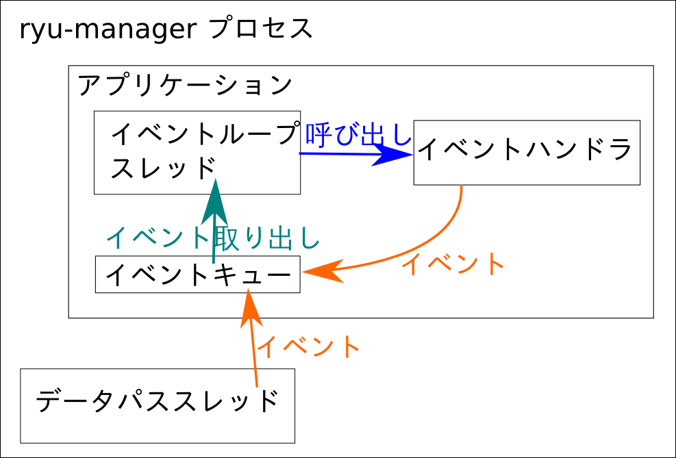
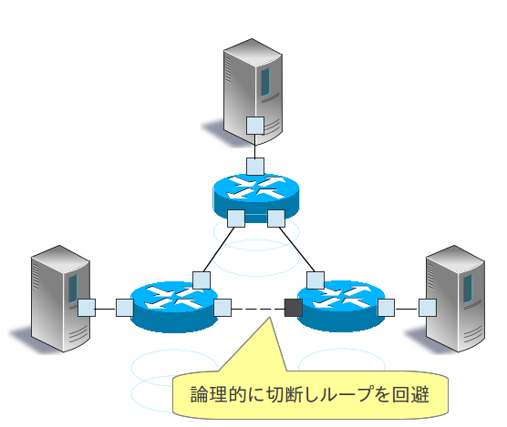

本章では、「スイッチングハブの実装」のスイッチングハブに簡単なリンク・アグリゲーション機能を追加します。
リンク・アグリゲーションは、IEEE802.1AX-2008で規定されている、複数の物理的な回線を束ねてひとつの論理的なリンクとして扱う技術です。リンク・アグリゲーション機能により、特定のネットワーク機器間の通信速度を向上させることができ、また同時に、冗長性を確保することで耐障害性を向上させることができます。
|  |  |
リンク・アグリゲーション機能を使用するには、それぞれのネットワーク機器において、どのインターフェースをどのグループとして束ねるのかという設定を事前に行っておく必要があります。
リンク・アグリゲーション機能を開始する方法には、それぞれのネットワーク機器に対し直接指示を行うスタティックな方法と、LACP(Link Aggregation Control Protocol)というプロトコルを使用することによって動的に開始させるダイナミックな方法があります。
ダイナミックな方法を採用した場合、各ネットワーク機器は対向インターフェース同士でLACPデータユニットを定期的に交換することにより、疎通不可能になっていないことをお互いに確認し続けます。この方法には、ネットワーク機器間にメディアコンバータなどの中継装置が存在した場合にも、中継装置の向こう側のリンクダウンを検知することができるというメリットがあります。本章では、LACPを用いたダイナミックなリンク・アグリゲーション機能を実装していきます。
LACPを用いたリンク・アグリゲーションの仕組みは、簡単に言うと以下のようなものです。
OpenFlowスイッチとOpenFlowコントローラで、リンク・アグリゲーション機能を以下のように実現することにします。実装を簡素化するためにいくつか制限を設けてあります。
前章で整理した機能の大部分を実装したLACPライブラリが、Ryuのソースツリーにあります。
ryu/lib/lacplib.py
注意
Ryu3.2に含まれているlacplib.pyには不具合があります。Ryu3.3以降をご利用ください。
以降の節で、各機能が具体的にどのように実装されているかを見ていきます。なお、引用されているソースは抜粋です。全体像については実際のソースをご参照ください。
前述のとおり、リンク・アグリゲーション機能を使用するには、どのネットワーク機器においてどのインターフェースをどのグループとして束ねるのかという設定を事前に行っておく必要があります。RyuのLACPライブラリでは、以下のメソッドでこの設定を行います。
def add(self, dpid, ports):
# ...
assert isinstance(ports, list)
assert 2 <= len(ports)
ifs = {}
for port in ports:
ifs[port] = {'enabled': False, 'timeout': 0}
bond = {}
bond[dpid] = ifs
self._bonds.append(bond)
引数の内容は以下のとおりです。
dpid
OpenFlowスイッチのデータパスIDを指定します。
ports
グループ化したいポート番号のリストを指定します。
このメソッドを呼び出すことにより、LACPライブラリは指定されたデータパスIDのOpenFlowスイッチの指定されたポートをひとつのインターフェースとして扱うようになります。複数のグループを作成したい場合、その都度add()メソッドを呼び出します。なお、論理インターフェースに割り当てられるMACアドレスは、OpenFlowスイッチの持つLOCALポートと同じものが自動的に使用されます。
ちなみに
OpenFlowスイッチの中には、スイッチ自身の機能としてリンク・アグリゲーション機能を提供しているものもあります（Open vSwitchなど）。ここではそうしたスイッチ独自の機能は使用せず、OpenFlowコントローラによる制御によってリンク・アグリゲーション機能を実現します。
「スイッチングハブの実装」のスイッチングハブは、宛先のMACアドレスが未学習の場合、受信したパケットをフラッディングします。LACPデータユニットは隣接するネットワーク機器間でのみ交換されるべきもので、他の機器に転送してしまうとリンク・アグリゲーション機能が正しく動作しません。そこで、「Packet-Inで受信したパケットがLACPデータユニットであれば専用の動作を行い、LACPデータユニット以外のパケットであればスイッチングハブの動作に委ねる」という処理分岐を行い、スイッチングハブにLACPデータユニットを処理させないようにします。
@set_ev_cls(ofp_event.EventOFPPacketIn, MAIN_DISPATCHER)
def packet_in_handler(self, evt):
"""PacketIn event handler. when the received packet was LACP,
proceed it. otherwise, send a event."""
req_pkt = packet.Packet(evt.msg.data)
if slow.lacp in req_pkt:
(req_lacp, ) = req_pkt.get_protocols(slow.lacp)
(req_eth, ) = req_pkt.get_protocols(ethernet.ethernet)
self._do_lacp(req_lacp, req_eth.src, evt.msg)
else:
self.send_event_to_observers(EventPacketIn(evt.msg))
イベントハンドラ自体は「スイッチングハブの実装」と同様です。受信したメッセージにLACPデータユニットが含まれているかどうかで処理を分岐させています。
LACPデータユニットが含まれていた場合はLACPライブラリのLACPデータユニット受信処理を行います。LACPデータユニットが含まれていなかった場合、send_event_to_observers()というメソッドを呼んでいます。これはryu.base.app_manager.RyuAppクラスで定義されている、イベントを送信するためのメソッドです。
「スイッチングハブの実装」ではRyuで定義されたOpenFlowメッセージ受信イベントについて触れましたが、ユーザが独自にイベントを定義することもできます。上記ソースで送信しているEventPacketInというイベントは、LACPライブラリ内で作成したユーザ定義イベントです。
class EventPacketIn(event.EventBase):
"""a PacketIn event class using except LACP."""
def __init__(self, msg):
"""initialization."""
super(EventPacketIn, self).__init__()
self.msg = msg
ユーザ定義イベントは、ryu.controller.event.EventBaseクラスを継承して作成します。イベントクラスに内包するデータに制限はありません。EventPacketInクラスでは、Packet-Inメッセージで受信したryu.ofproto.OFPPacketInインスタンスをそのまま使用しています。
ユーザ定義イベントの受信方法については後述します。
LACPライブラリのLACPデータユニット受信処理は、以下の処理からなっています。
2.の処理については後述の「LACPデータユニットをPacket-Inさせるフローエントリの登録」で、3.の処理については後述の「LACPデータユニットの送受信処理」で、それぞれ説明します。ここでは1.の処理について説明します。
def _do_lacp(self, req_lacp, src, msg):
# ...
# when LACP arrived at disabled port, update the status of
# the slave i/f to enabled, and send a event.
if not self._get_slave_enabled(dpid, port):
self.logger.info(
"SW=%s PORT=%d the slave i/f has just been up.",
dpid_to_str(dpid), port)
self._set_slave_enabled(dpid, port, True)
self.send_event_to_observers(
EventSlaveStateChanged(datapath, port, True))
_get_slave_enabled()メソッドは、指定したスイッチの指定したポートが有効か否かを取得します。_set_slave_enabled()メソッドは、指定したスイッチの指定したポートの有効/無効状態を設定します。
上記のソースでは、無効状態のポートでLACPデータユニットを受信した場合、ポートの状態が変更されたということを示すEventSlaveStateChangedというユーザ定義イベントを送信しています。
class EventSlaveStateChanged(event.EventBase):
"""a event class that notifies the changes of the statuses of the
slave i/fs."""
def __init__(self, datapath, port, enabled):
"""initialization."""
super(EventSlaveStateChanged, self).__init__()
self.datapath = datapath
self.port = port
self.enabled = enabled
EventSlaveStateChangedイベントは、ポートが有効化したときの他に、ポートが無効化したときにも送信されます。無効化したときの処理は「FlowRemovedメッセージの受信処理」で実装されています。
EventSlaveStateChangedクラスには以下の情報が含まれます。
LACPデータユニットの交換間隔には、FAST（1秒ごと）とSLOW（30秒ごと）の2種類があります。リンク・アグリゲーションの仕様によれば、交換間隔の3倍の時間無通信状態が続いた場合、そのインターフェースはリンク・アグリゲーションのグループから除外され、パケットの転送には使用されなくなります。
LACPライブラリでは、LACPデータユニット受信時にPacket-Inさせるフローエントリに対し、交換間隔の3倍の時間（SHORT_TIMEOUT_TIMEは3秒、LONG_TIMEOUT_TIMEは90秒）をidle_timeoutとして設定することにより、無通信の監視を行っています。
交換間隔が変更された場合、idle_timeoutの時間も再設定する必要があるため、LACPライブラリでは以下のような実装をしています。
def _do_lacp(self, req_lacp, src, msg):
# ...
# set the idle_timeout time using the actor state of the
# received packet.
if req_lacp.LACP_STATE_SHORT_TIMEOUT == \
req_lacp.actor_state_timeout:
idle_timeout = req_lacp.SHORT_TIMEOUT_TIME
else:
idle_timeout = req_lacp.LONG_TIMEOUT_TIME
# when the timeout time has changed, update the timeout time of
# the slave i/f and re-enter a flow entry for the packet from
# the slave i/f with idle_timeout.
if idle_timeout != self._get_slave_timeout(dpid, port):
self.logger.info(
"SW=%s PORT=%d the timeout time has changed.",
dpid_to_str(dpid), port)
self._set_slave_timeout(dpid, port, idle_timeout)
func = self._add_flow.get(ofproto.OFP_VERSION)
assert func
func(src, port, idle_timeout, datapath)
# ...
_get_slave_timeout()メソッドは、指定したスイッチの指定したポートにおける現在のidle_timeout値を取得します。_set_slave_timeout()メソッドは、指定したスイッチの指定したポートにおけるidle_timeout値を登録します。初期状態およびリンク・アグリゲーション・グループから除外された場合にはidle_timeout値は0に設定されているため、新たにLACPデータユニットを受信した場合、交換間隔がどちらであってもフローエントリを登録します。
使用するOpenFlowのバージョンによりOFPFlowModクラスのコンストラクタの引数が異なるため、バージョンに応じたフローエントリ登録メソッドを取得しています。以下はOpenFlow 1.2以降で使用するフローエントリ登録メソッドです。
def _add_flow_v1_2(self, src, port, timeout, datapath):
"""enter a flow entry for the packet from the slave i/f
with idle_timeout. for OpenFlow ver1.2 and ver1.3."""
ofproto = datapath.ofproto
parser = datapath.ofproto_parser
match = parser.OFPMatch(
in_port=port, eth_src=src, eth_type=ether.ETH_TYPE_SLOW)
actions = [parser.OFPActionOutput(
ofproto.OFPP_CONTROLLER, ofproto.OFPCML_MAX)]
inst = [parser.OFPInstructionActions(
ofproto.OFPIT_APPLY_ACTIONS, actions)]
mod = parser.OFPFlowMod(
datapath=datapath, command=ofproto.OFPFC_ADD,
idle_timeout=timeout, priority=65535,
flags=ofproto.OFPFF_SEND_FLOW_REM, match=match,
instructions=inst)
datapath.send_msg(mod)
上記ソースで、「対向インターフェースからLACPデータユニットを受信した場合はPacket-Inする」というフローエントリを、無通信監視時間つき最高優先度で設定しています。
LACPデータユニット受信時、「ポートの有効/無効状態変更に伴う処理」や「LACPデータユニットをPacket-Inさせるフローエントリの登録」を行った後、応答用のLACPデータユニットを作成し、送信します。
def _do_lacp(self, req_lacp, src, msg):
# ...
# create a response packet.
res_pkt = self._create_response(datapath, port, req_lacp)
# packet-out the response packet.
out_port = ofproto.OFPP_IN_PORT
actions = [parser.OFPActionOutput(out_port)]
out = datapath.ofproto_parser.OFPPacketOut(
datapath=datapath, buffer_id=ofproto.OFP_NO_BUFFER,
data=res_pkt.data, in_port=port, actions=actions)
datapath.send_msg(out)
上記ソースで呼び出されている_create_response()メソッドは応答用パケット作成処理です。その中で呼び出されている_create_lacp()メソッドで応答用のLACPデータユニットを作成しています。作成した応答用パケットは、LACPデータユニットを受信したポートからPacket-Outさせます。
LACPデータユニットには送信側（Actor）の情報と受信側（Partner）の情報を設定します。受信したLACPデータユニットの送信側情報には対向インターフェースの情報が記載されているので、OpenFlowスイッチから応答を返すときにはそれを受信側情報として設定します。
def _create_lacp(self, datapath, port, req):
"""create a LACP packet."""
actor_system = datapath.ports[datapath.ofproto.OFPP_LOCAL].hw_addr
res = slow.lacp(
# ...
partner_system_priority=req.actor_system_priority,
partner_system=req.actor_system,
partner_key=req.actor_key,
partner_port_priority=req.actor_port_priority,
partner_port=req.actor_port,
partner_state_activity=req.actor_state_activity,
partner_state_timeout=req.actor_state_timeout,
partner_state_aggregation=req.actor_state_aggregation,
partner_state_synchronization=req.actor_state_synchronization,
partner_state_collecting=req.actor_state_collecting,
partner_state_distributing=req.actor_state_distributing,
partner_state_defaulted=req.actor_state_defaulted,
partner_state_expired=req.actor_state_expired,
collector_max_delay=0)
self.logger.info("SW=%s PORT=%d LACP sent.",
dpid_to_str(datapath.id), port)
self.logger.debug(str(res))
return res
指定された時間の間LACPデータユニットの交換が行われなかった場合、OpenFlowスイッチはFlowRemovedメッセージをOpenFlowコントローラに送信します。
@set_ev_cls(ofp_event.EventOFPFlowRemoved, MAIN_DISPATCHER)
def flow_removed_handler(self, evt):
"""FlowRemoved event handler. when the removed flow entry was
for LACP, set the status of the slave i/f to disabled, and
send a event."""
msg = evt.msg
datapath = msg.datapath
ofproto = datapath.ofproto
dpid = datapath.id
match = msg.match
if ofproto.OFP_VERSION == ofproto_v1_0.OFP_VERSION:
port = match.in_port
dl_type = match.dl_type
else:
port = match['in_port']
dl_type = match['eth_type']
if ether.ETH_TYPE_SLOW != dl_type:
return
self.logger.info(
"SW=%s PORT=%d LACP exchange timeout has occurred.",
dpid_to_str(dpid), port)
self._set_slave_enabled(dpid, port, False)
self._set_slave_timeout(dpid, port, 0)
self.send_event_to_observers(
EventSlaveStateChanged(datapath, port, False))
FlowRemovedメッセージを受信すると、OpenFlowコントローラは_set_slave_enabled()メソッドを使用してポートの無効状態を設定し、_set_slave_timeout()メソッドを使用してidle_timeout値を0に設定し、send_event_to_observers()メソッドを使用してEventSlaveStateChangedイベントを送信します。
前章で説明したLACPライブラリを使用してリンク・アグリゲーション機能を実装したスイッチングハブのソースコードが、Ryuのソースツリーにあります。
ryu/app/simple_switch_lacp.py
ただし、上記のソースはOpenFlow 1.0用であるため、新たにOpenFlow 1.3に対応した実装を作成することにします。
ソース名：simple_switch_lacp_13.py
# Copyright (C) 2013 Nippon Telegraph and Telephone Corporation.
#
# Licensed under the Apache License, Version 2.0 (the "License");
# you may not use this file except in compliance with the License.
# You may obtain a copy of the License at
#
# http://www.apache.org/licenses/LICENSE-2.0
#
# Unless required by applicable law or agreed to in writing, software
# distributed under the License is distributed on an "AS IS" BASIS,
# WITHOUT WARRANTIES OR CONDITIONS OF ANY KIND, either express or
# implied.
# See the License for the specific language governing permissions and
# limitations under the License.
from ryu.base import app_manager
from ryu.controller import ofp_event
from ryu.controller.handler import CONFIG_DISPATCHER
from ryu.controller.handler import MAIN_DISPATCHER
from ryu.controller.handler import set_ev_cls
from ryu.ofproto import ofproto_v1_3
from ryu.lib import lacplib
from ryu.lib.dpid import str_to_dpid
from ryu.lib.packet import packet
from ryu.lib.packet import ethernet
class SimpleSwitchLacp13(app_manager.RyuApp):
OFP_VERSIONS = [ofproto_v1_3.OFP_VERSION]
_CONTEXTS = {'lacplib': lacplib.LacpLib}
def __init__(self, *args, **kwargs):
super(SimpleSwitchLacp13, self).__init__(*args, **kwargs)
self.mac_to_port = {}
self._lacp = kwargs['lacplib']
self._lacp.add(
dpid=str_to_dpid('0000000000000001'), ports=[1, 2])
@set_ev_cls(ofp_event.EventOFPSwitchFeatures, CONFIG_DISPATCHER)
def switch_features_handler(self, ev):
datapath = ev.msg.datapath
ofproto = datapath.ofproto
parser = datapath.ofproto_parser
# install table-miss flow entry
#
# We specify NO BUFFER to max_len of the output action due to
# OVS bug. At this moment, if we specify a lesser number, e.g.,
# 128, OVS will send Packet-In with invalid buffer_id and
# truncated packet data. In that case, we cannot output packets
# correctly.
match = parser.OFPMatch()
actions = [parser.OFPActionOutput(ofproto.OFPP_CONTROLLER,
ofproto.OFPCML_NO_BUFFER)]
self.add_flow(datapath, 0, match, actions)
def add_flow(self, datapath, priority, match, actions):
ofproto = datapath.ofproto
parser = datapath.ofproto_parser
inst = [parser.OFPInstructionActions(ofproto.OFPIT_APPLY_ACTIONS,
actions)]
mod = parser.OFPFlowMod(datapath=datapath, priority=priority,
match=match, instructions=inst)
datapath.send_msg(mod)
def del_flow(self, datapath, match):
ofproto = datapath.ofproto
parser = datapath.ofproto_parser
mod = parser.OFPFlowMod(datapath=datapath,
command=ofproto.OFPFC_DELETE,
match=match)
datapath.send_msg(mod)
@set_ev_cls(lacplib.EventPacketIn, MAIN_DISPATCHER)
def _packet_in_handler(self, ev):
msg = ev.msg
datapath = msg.datapath
ofproto = datapath.ofproto
parser = datapath.ofproto_parser
in_port = msg.match['in_port']
pkt = packet.Packet(msg.data)
eth = pkt.get_protocols(ethernet.ethernet)[0]
dst = eth.dst
src = eth.src
dpid = datapath.id
self.mac_to_port.setdefault(dpid, {})
self.logger.info("packet in %s %s %s %s", dpid, src, dst, in_port)
# learn a mac address to avoid FLOOD next time.
self.mac_to_port[dpid][src] = in_port
if dst in self.mac_to_port[dpid]:
out_port = self.mac_to_port[dpid][dst]
else:
out_port = ofproto.OFPP_FLOOD
actions = [parser.OFPActionOutput(out_port)]
# install a flow to avoid packet_in next time
if out_port != ofproto.OFPP_FLOOD:
match = parser.OFPMatch(in_port=in_port, eth_dst=dst)
self.add_flow(datapath, 1, match, actions)
data = None
if msg.buffer_id == ofproto.OFP_NO_BUFFER:
data = msg.data
out = parser.OFPPacketOut(datapath=datapath, buffer_id=msg.buffer_id,
in_port=in_port, actions=actions, data=data)
datapath.send_msg(out)
@set_ev_cls(lacplib.EventSlaveStateChanged, MAIN_DISPATCHER)
def _slave_state_changed_handler(self, ev):
datapath = ev.datapath
dpid = datapath.id
port_no = ev.port
enabled = ev.enabled
self.logger.info("slave state changed port: %d enabled: %s",
port_no, enabled)
if dpid in self.mac_to_port:
for mac in self.mac_to_port[dpid]:
match = datapath.ofproto_parser.OFPMatch(eth_dst=mac)
self.del_flow(datapath, match)
del self.mac_to_port[dpid]
self.mac_to_port.setdefault(dpid, {})
これより、「スイッチングハブの実装」のスイッチングハブとの差異を順に説明していきます。
ryu.base.app_manager.RyuAppを継承したRyuアプリケーションは、「_CONTEXTS」ディクショナリに他のRyuアプリケーションを設定することにより、他のアプリケーションを別スレッドで起動させることができます。ここではryu.lib.lacplibモジュールのLacpLibクラスを「lacplib」という名前で「_CONTEXTS」に設定しています。
from ryu.lib import lacplib
# ...
class SimpleSwitchLacp13(app_manager.RyuApp):
OFP_VERSIONS = [ofproto_v1_3.OFP_VERSION]
_CONTEXTS = {'lacplib': lacplib.LacpLib}
# ...
「_CONTEXTS」に設定したアプリケーションは、__init__()メソッドのkwargsからインスタンスを取得することができます。
# ...
def __init__(self, *args, **kwargs):
super(SimpleSwitchLacp13, self).__init__(*args, **kwargs)
self.mac_to_port = {}
self._lacp = kwargs['lacplib']
# ...
「_CONTEXTS」に設定したLACPライブラリの初期設定を行います。初期設定にはLACPライブラリの提供するadd()メソッドを実行します。ここでは以下の値を設定します。
| パラメータ | 値 | 説明 |
|---|---|---|
| dpid | str_to_dpid(‘0000000000000001’) | データパスID |
| ports | [1, 2] | グループ化するポートのリスト |
この設定により、データパスID「0000000000000001」のOpenFlowスイッチのポート1とポート2がひとつのリンク・アグリゲーション・グループとして動作します。
# ...
self._lacp = kwargs['lacplib']
self._lacp.add(
dpid=str_to_dpid('0000000000000001'), ports=[1, 2])
# ...
前章で説明したとおり、LACPライブラリはLACPデータユニットの含まれないPacket-InメッセージをEventPacketInというユーザ定義イベントとして送信します。ユーザ定義イベントのイベントハンドラも、Ryuが提供するイベントハンドラと同じようにryu.controller.handler.set_ev_clsデコレータで装飾します。
@set_ev_cls(lacplib.EventPacketIn, MAIN_DISPATCHER)
def _packet_in_handler(self, ev):
msg = ev.msg
datapath = msg.datapath
ofproto = datapath.ofproto
parser = datapath.ofproto_parser
in_port = msg.match['in_port']
# ...
また、LACPライブラリはポートの有効/無効状態が変更されるとEventSlaveStateChangedイベントを送信しますので、こちらもイベントハンドラを作成しておきます。
@set_ev_cls(lacplib.EventSlaveStateChanged, lacplib.LAG_EV_DISPATCHER)
def _slave_state_changed_handler(self, ev):
datapath = ev.datapath
dpid = datapath.id
port_no = ev.port
enabled = ev.enabled
self.logger.info("slave state changed port: %d enabled: %s",
port_no, enabled)
if dpid in self.mac_to_port:
for mac in self.mac_to_port[dpid]:
match = datapath.ofproto_parser.OFPMatch(eth_dst=mac)
self.del_flow(datapath, match)
del self.mac_to_port[dpid]
self.mac_to_port.setdefault(dpid, {})
「実装するリンク・アグリゲーション機能の整理」で整理したとおり、ポートの有効/無効状態が変更され、パケットの転送に使用可能な物理インターフェースの個数が増減すると、論理インターフェースを通過するパケットが実際に使用する物理インターフェースが変更になる可能性があります。パケットの経路が変更される場合、すでに登録されているフローエントリを削除し、新たにフローエントリを登録する必要があります。この例では処理を簡略化するため、「ポートの有効/無効状態が変更された場合、当該OpenFlowスイッチの全学習結果を削除する」という実装となっています。
def del_flow(self, datapath, match):
ofproto = datapath.ofproto
parser = datapath.ofproto_parser
mod = parser.OFPFlowMod(datapath=datapath,
command=ofproto.OFPFC_DELETE,
match=match)
datapath.send_msg(mod)
フローエントリの削除はOFPFlowModクラスのインスタンスで行います。
実際に、リンク・アグリゲーション機能搭載スイッチングハブを実行してみます。最初に「スイッチングハブの実装」と同様にMininetを実行しますが、下図のようにトポロジが特殊なため、mnコマンドで作成することができません。
以降の節で、環境構築からリンク・アグリゲーション機能搭載スイッチングハブの実行までの手順を説明します。
mnコマンドで構築できるトポロジでは、特定ノード間にはひとつのリンクしか作成できません。ここではMininetの低位クラスを直接使用するスクリプトを作成し、トポロジを作成することにします。
ソース名：link_aggregation.py
#!/usr/bin/env python
from mininet.cli import CLI
from mininet.link import Link
from mininet.net import Mininet
from mininet.node import RemoteController
from mininet.term import makeTerm
if '__main__' == __name__:
net = Mininet(controller=RemoteController)
c1 = net.addController('c1')
s1 = net.addSwitch('s1')
h1 = net.addHost('h1')
h2 = net.addHost('h2')
h3 = net.addHost('h3')
h4 = net.addHost('h4')
Link(s1, h1)
Link(s1, h1)
Link(s1, h2)
Link(s1, h3)
Link(s1, h4)
net.build()
c1.start()
s1.start([c1])
net.terms.append(makeTerm(s1))
net.terms.append(makeTerm(h1))
net.terms.append(makeTerm(h2))
net.terms.append(makeTerm(h3))
net.terms.append(makeTerm(h4))
CLI(net)
net.stop()
このプログラムを実行することにより、ホストh1とスイッチs1の間に2本のリンクが存在するトポロジが作成されます。netコマンドを実行することでトポロジを確認することができます。
ryu@ryu-vm:~$ sudo ./link_aggregation.py
Unable to contact the remote controller at 127.0.0.1:6633
mininet> net
c1
s1 lo: s1-eth1:h1-eth0 s1-eth2:h1-eth1 s1-eth3:h2-eth0 s1-eth4:h3-eth0 s1-eth5:h4-eth0
h1 h1-eth0:s1-eth1 h1-eth1:s1-eth2
h2 h2-eth0:s1-eth3
h3 h3-eth0:s1-eth4
h4 h4-eth0:s1-eth5
mininet>
前節のコマンドを実行すると、ホストh1～h4およびスイッチs1のxtermが起動します。ホストh1のxtermで、ホスト側のリンク・アグリゲーションの設定を行います。本節でのコマンド入力は、すべてホストh1のxterm上で行ってください。
まず、リンク・アグリゲーションを行うためのドライバモジュールをロードします。Linuxではリンク・アグリゲーション機能はボンディングドライバが担当しています。事前にドライバの設定ファイルを/etc/modprobe.d/bonding.confとして作成しておきます。
ファイル名:/etc/modprobe.d/bonding.conf
alias bond0 bonding
options bonding mode=4
root@ryu-vm:~# modprobe bonding
続いて、bond0という名前の論理インターフェースを新たに作成します。
root@ryu-vm:~# ip link add bond0 type bond
作成した論理インターフェースのグループに、h1-eth0とh1-eth1の物理インターフェースを参加させます。このとき、物理インターフェースをダウンさせておく必要があります。
root@ryu-vm:~# ip link set h1-eth0 down
root@ryu-vm:~# ip link set h1-eth0 master bond0
root@ryu-vm:~# ip link set h1-eth1 down
root@ryu-vm:~# ip link set h1-eth1 master bond0
論理インターフェースにIPアドレスを割り当てます。mnコマンドでホストを作成した場合にならって、10.0.0.1を割り当てることにします。
root@ryu-vm:~# ip addr add 10.0.0.1/24 dev bond0
最後に、論理インターフェースをアップさせます。
root@ryu-vm:~# ip link set bond0 up
「スイッチングハブの実装」で行ったのと同じように、使用するOpenFlowのバージョンを1.3に設定します。このコマンド入力は、スイッチs1のxterm上で行ってください。
root@ryu-vm:~# ovs-vsctl set Bridge s1 protocols=OpenFlow13
本章では、リンク・アグリゲーションライブラリの利用を題材として、以下の項目について説明しました。
{kind=link}
{kind=link}
{kind=link}